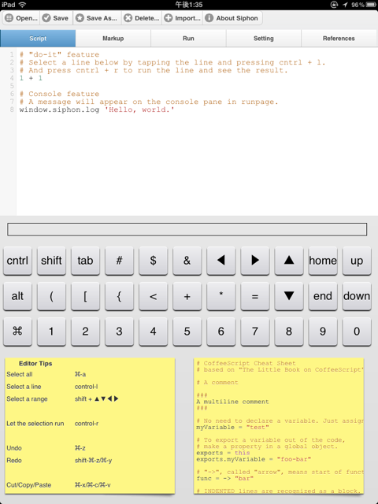

Siphon: CoffeeScript Programming Environment

Siphon is a CoffeeScript Programming Environment, especially for iPad-like Tablet.
Enjoy Siphon by clicking here!
Features
- Real-time compiling same as the CoffeeScript site
- Software keyboard enhancement with flick gesture
- jQuery Mobile look and feel
- Editor powered by CodeMirror
- Syntax highlight
- Undo/redo (⌘-z/⌘-y)
- Cut/copy/paste (⌘-x/⌘-c/⌘-v)
- (optional) Smart indent
- Smart home button: moving to first non-white-space character.
- Match brackets
- "File" storage
- Offline application
- Available libraries which you can use for programming
- Available libraries which you can import for programming
- Functional library - Underscore.coffee (1.1.0.FIX / MIT)
- Visualization library - Processing.js APIs (1.3.6 / MIT): You can use the canvas named "canvas" as html id in the execution page.
- Tutorials by other authors
Tips
- Inputting single or double quatation: You can input single or double quatation by flicking comma(') or period(.) key on software keyboard respectively.
- Missing keys: Buttons at the upper row are also flickable. Touch and hold, then you will see a different key.
Action Items
Change log
2011/12/12 - version 0.4.1: Cut/copy/paste. Match brakets. Smart indent option.
2011/12/10 - version 0.4.0: Onscreen keyboard enhancement.
2011/12/07 - version 0.3.6: improved click sound performance.
2011/12/05 - version 0.3.5: enabling syntax highlight on iPad again, syntax highlight viewer for compiled JavaScript, and Processing.js + CoffeeScript example by D. Guttman.
2011/12/02 - version 0.3.4: Automatic device detection and disabling syntax highlight on iPad.
2011/12/01 - version 0.3.3: No useless page-transition when executing.
2011/12/01 - version 0.3.2: Offline documents.
2011/11/30 - version 0.3.1: Default keyboard enhancement off.
2011/11/28 - version 0.3.0: Syntax highlight.
2011/11/28 - version 0.2.6: Tutorials. removed CoffeeKup library.
2011/11/21 - version 0.2.5: Processing.js library.
2011/11/19 - version 0.2.4: setting menu for disabling keyboard enhancement.
2011/11/14 - version 0.2.3: startup time optimization.
2011/11/10 - version 0.2.2: iOS-like keytop design.
2011/11/08 - version 0.2.0: jQuery Mobile look and feel. flickable soft keyboard.
2011/10/16 - Initial release